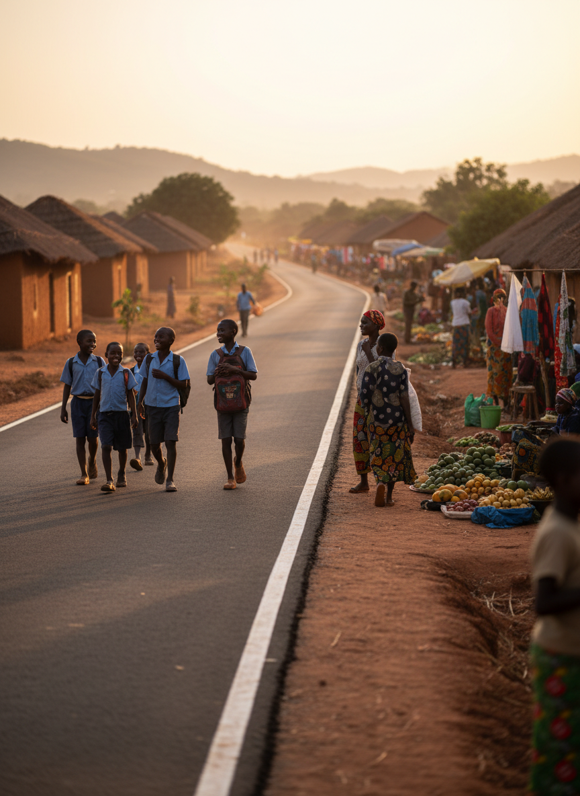
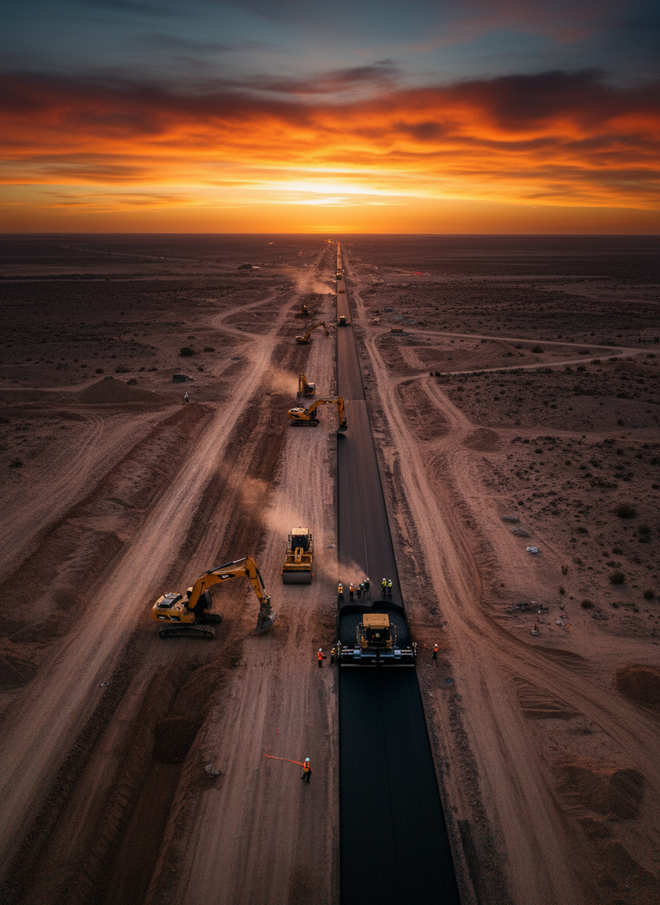
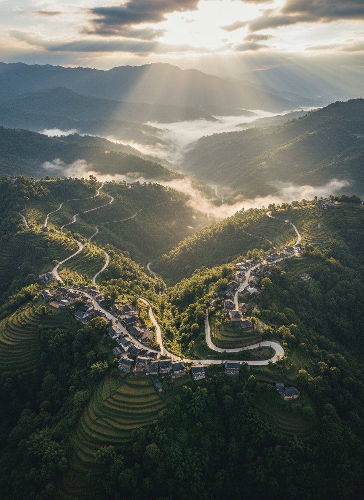
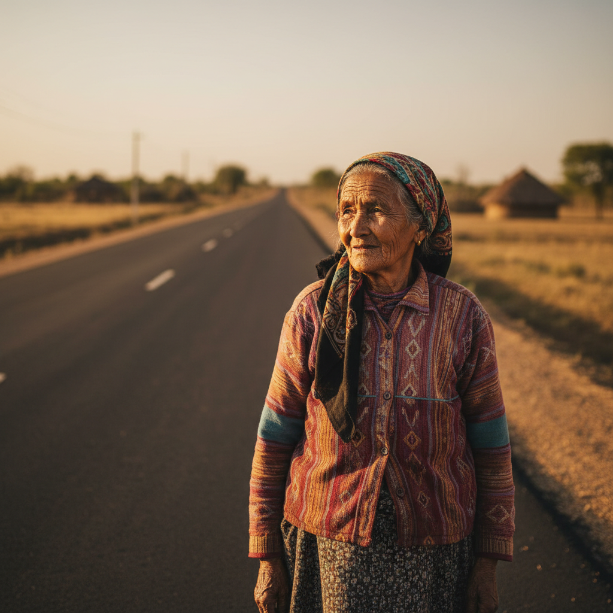
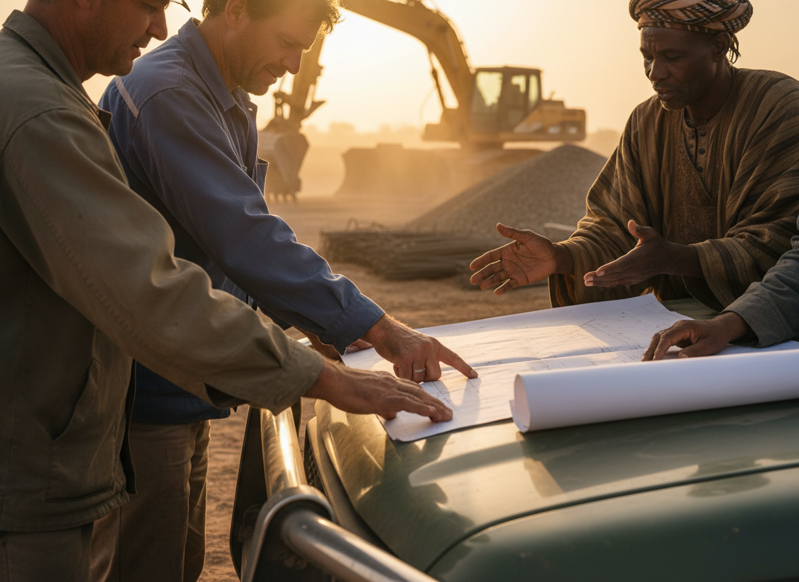
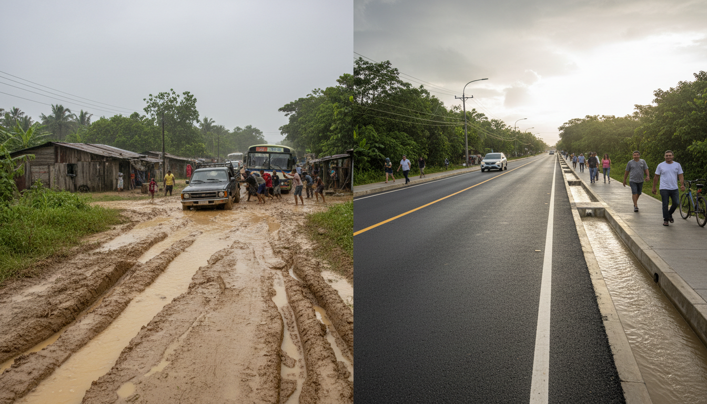

نمول بناء وإصلاح وصيانة الطرق العامة لربط المجتمعات المعزولة بفرص أفضل في التعليم والصحة والتجارة.
طريق تم تمويله
في ٤٢ دولة حول العالم
مستفيد
مجتمعات ربطناها بالعالم
دولار من التبرعات
بشفافية كاملة ومراجعة مستقلة
مشروع نشط
قيد التنفيذ حالياً

طريق جديدربط ١٢ قرية معزولة بشبكة الطرق الرئيسية لتسهيل الوصول إلى المدارس والمستشفيات.
64% مكتمل

جسربناء جسر يربط بين ضفتي النهر لخدمة ٥٠٠٠ أسرة تعتمد على القوارب.
68% مكتمل
إصلاح ٤٥ كيلومتراً من الطرق الساحلية المتضررة من الأعاصير.
59% مكتمل

طريق جبليشق طريق جبلي يربط مجتمعات الأعالي بالوادي الرئيسي.
60% مكتمل
نؤمن بأن الشفافية الكاملة هي أساس الثقة.
إجمالي التبرعات
$48.2M
+18%
الأموال المخصصة
$42.7M
88.6%
ميزانية الصيانة
$8.7M
سنوياً
حملات نشطة
34
جارية

اختر طريقة الدفع
ستتلقى إيصالاً تلقائياً عبر البريد الإلكتروني.

الطرق هي الشريان الحيوي الذي يربط المجتمعات المعزولة بالتعليم والرعاية الصحية والأسواق.
كل طريق نبنيه يفتح أبواب الفرص: أطفال يصلون إلى المدارس، مرضى يحصلون على الرعاية.
لا نبني فقط — نُصون. نخصص ميزانيات صيانة دائمة وندرب الكوادر المحلية لعقود قادمة.

"الطريق الجديد غيّر حياتنا. أصبح بإمكان أطفالنا الوصول إلى المدرسة في ربع الوقت."
فاطمة أحمد
أم لخمسة أطفال — كينيا
"كمزارع، كنت أفقد ٤٠٪ من محصولي. الطريق الجديد أنقذ رزقي."
راجيش كومار
مزارع — نيبال
تقارير مالية ربع سنوية متاحة للجميع
مراجعة سنوية من شركات تدقيق دولية معتمدة
معتمدون من هيئات رقابية دولية متعددة
شراكات مع منظمات أممية وحكومات محلية
شركاؤنا الموثوقون